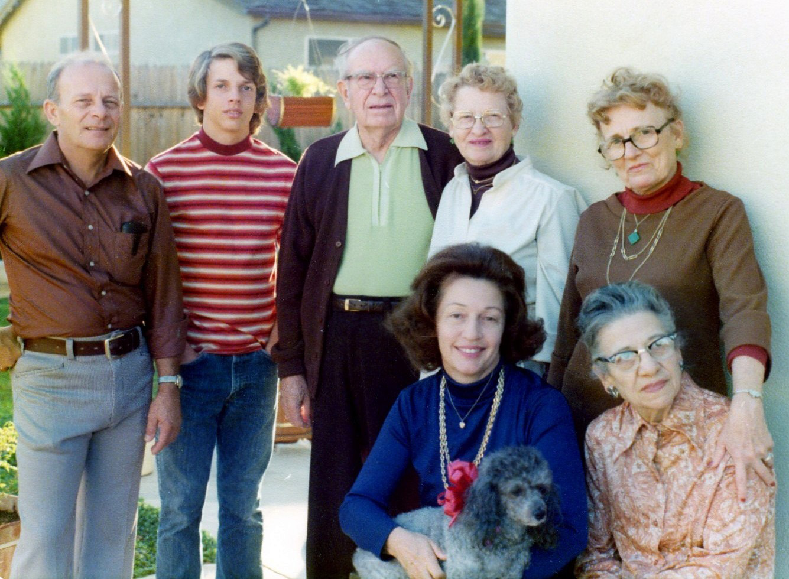

Donald L. HALLER
(1926-2003)
|

Donald L. HALLER (1926-2003) |
Donald L. HALLER 1 2 3 4
NOTES: A very kind man and friend, and a loving husband, son and father. There wasn't anything he would not do for his children, his family or friends. He worked in the candy production industry. He will be greatly missed by all who knew him.
Find A Grave, Memorial # 95649410 Donald married June La Rue SCOGGAN, daughter of Enos W. SCOGGAN and Ruth Alice. (June La Rue SCOGGAN was born on Apr 7, 1923 in California and died on May 18, 2011 in Escondido, San Diego County, California 6.) |
 General Notes:
General Notes: